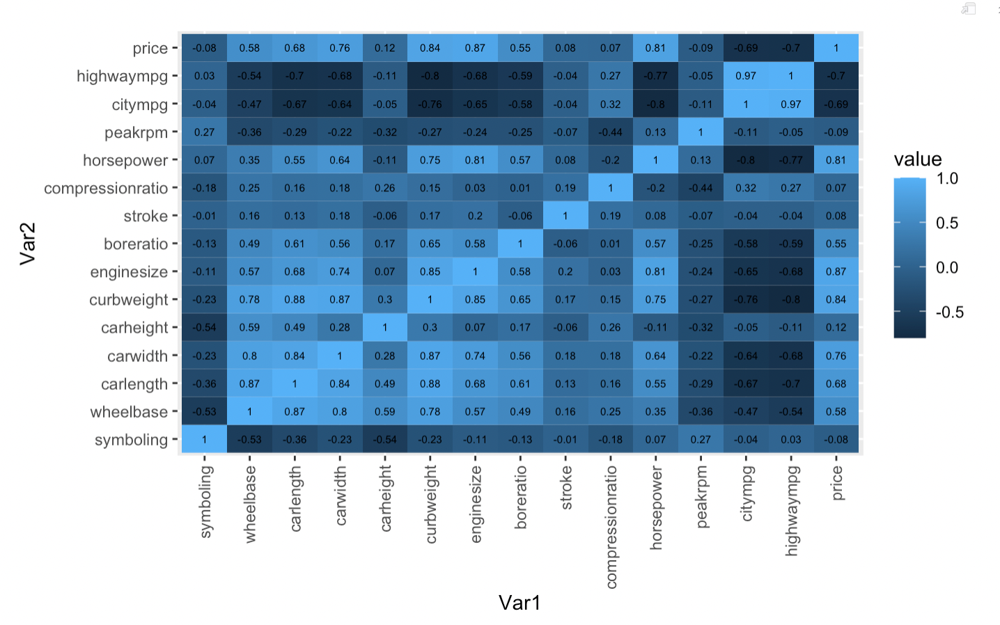

Automobile Data Set from UCI Machine Learning Repository (DIM: 26 x 205)
The dependent variable is car price, the car price distribution is as followed:
| Mean | 25 percentile | Median | 75 percentile | Maximum |
|---|---|---|---|---|
| $5118 | $7788 | $10295 | $16503 | $45400 |
The covariates used in the study are:
| Variable name | Description |
|---|---|
| symbolling | Its assigned insurance risk rating, A value of +3 indicates that the auto is risky, -3 that it is probably pretty safe.(Categorical) |
| wheelbase | Weelbase of car (Numeric) |
| carlength | Length of car (Numeric) |
| carwidth | Width of car (Numeric) |
| carheight | height of car (Numeric) |
| curbweight | The weight of a car without occupants or baggage. (Numeric) |
| enginesize | Size of car (Numeric) |
| boreratio | Boreratio of car (Numeric) |
| stroke | Stroke or volume inside the engine (Numeric) |
| compressionratio | compression ratio of car (Numeric) |
| horsepower | Horsepower (Numeric) |
| peakrpm | car peak rpm (Numeric) |
| citympg | Mileage in city (Numeric) |
| highwaympg | Mileage on highway (Numeric) |
There is no missing value in the dataset

It is noticed that among numeric variables: